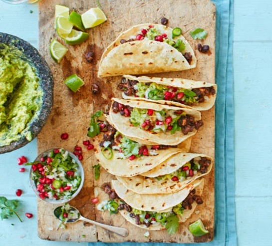

Main
Spicy black bean tacos

Ingredients
- 1 tbsp vegetable oil
- 3 garlic cloves
- 3 x 400g cans black beans
- 3 tbsp cider vinegar
- 1 ½ tbsp honey
- 1 ½ tbsp smoked paprika
- 1 ½ tbsp ground cumin
- guacamole
- salsa
- 8-12 corn or flour tortillas
- chipotle
- soured cream
Method
- In a large frying pan, heat the oil and add the garlic. Fry until golden, then add the beans. Pour in the cider vinegar, honey and spices along with 1 tsp or more of salt, to taste. Cook until warmed through, crushing gently with the back of your wooden spoon, then set aside.
- The best way to make the guacamole is with a large stone pestle and mortar, but you can use a medium bowl and a flat-ended rolling pin instead. Crush the garlic, coriander and chilli into a rough paste. Scoop in the avocado with a little salt and crush roughly – you want it chunky, not smooth. Squeeze in the lime juice and set aside.
- Mix the salsa ingredients in a small bowl. Heat a griddle pan or steamer and quickly griddle the tortillas or steam a stack of them to warm up. Reheat the bean mixture.
- To serve, put 1-2 heaped tbsp of beans on a tortilla. Top with a big spoonful of guacamole and some salsa, hot sauce and a dollop of soured cream or yogurt.